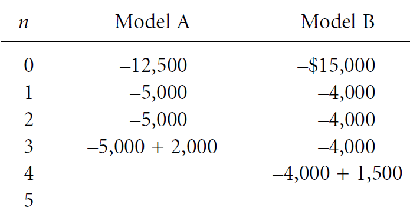

← Back to Index
Example 52 (Slide 176)
As business grows to a certain level, neither of
the models can handle the expanded volume at
the end of year 5. If that happens, a fully
computerized mail-order system will need to be
installed
to
handle
the
increased
business
volume. With this scenario, which model should
the firm select at MARR = 15%?
176
Two Mutually Exclusive Alternatives
Example of Present Worth Comparison
with Project Lives Shorter Than Analysis Period [2]
